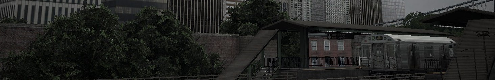
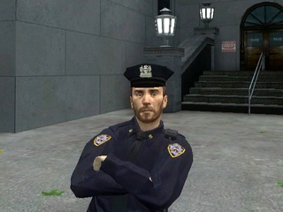
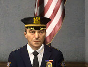
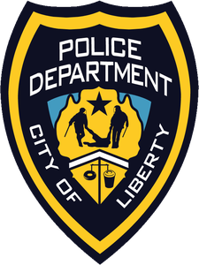

Информационный отдел Полицейского Департамента Либерти-Сити
Вера равно смерть.
Ваше текущее местоположение: Брокер, Либерти-Сити.
Ближайший полицейский участок: Брокер, Хоув-Бич, участок №92.

РАБОТА

Задумайтесь о карьере полицейского. Городу остро нужны стражи порядка, и вы можете стать одним из них! Мы гарантируем настойчивые запросы в мэрию о стабильных зарплатах, премиях и медицинской страховке.
Контакты участка №92

Quentin Smith
Шеф департамента
Дополнительная информация
КАК ПОСТУПИТЬ В ПОЛИЦИЮ?

Сейчас идёт отбор на должности:
- Диспетчер
- Надзиратель
- Уборщик
- Офицер полиции: им может стать любой желающий*
Достаточно прийти в ближайший участок и подать заявление в регистратуру. Для продвижения нужно долго отработать, проявить нужные качества, сдать экзамен и уведомить старший состав о желании занять свободную позицию.**
*Информацию по вступлению на службу выдают в регистратуре.
**Расспросы о повышении чаще положенного грозят тяжкими последствиями, вплоть до увольнения.
ОРУЖЕЙНОЕ ПОЛОЖЕНИЕ
В Либерти-Сити огнестрельное оружие издавна было вне закона. Поправки о самообороне разрешили гражданам определённые виды при наличии лицензии. Легальным считается оружие, у которого:
- есть пистолетная рукоять
- нет приклада
- ствол не длиннее 150 мм
- только одиночный режим стрельбы
- нет глушителя
Самостоятельно переделывать оружие в другой класс запрещено. Укороченная винтовка это уже SBR, а не пистолет.
КОНТРОЛИРУЕМЫЕ СУБСТАНЦИИ
Для стабильности жизни порой приходится обращаться к спорным веществам: растворитель сам по себе безвреден, но популярен у наркоманов, а морфин лечит, хотя опиум вне закона. Хранение не грозит сроком при наличии рецепта, разумного количества, лицензий и оснований.
Спорное имущество, деньги и транспорт могут изымать без обвинения владельца (ПИГИ, принудительное изъятие гражданского имущества): достаточно подозрения, что вещь связана с нелегальной деятельностью. Живите скромно!
- Растворители и промышленная химия дома считаются подозрительными.
- Морфин безопасен и законен в дозе до 15 мг. Много лекарств любого типа это хранение с целью сбыта.
- Домашняя химия и производство не на уровне хобби тоже повод для изъятия.
Лучше всего отображается при разрешении 800x600.
Вы наш посетитель номер 000417